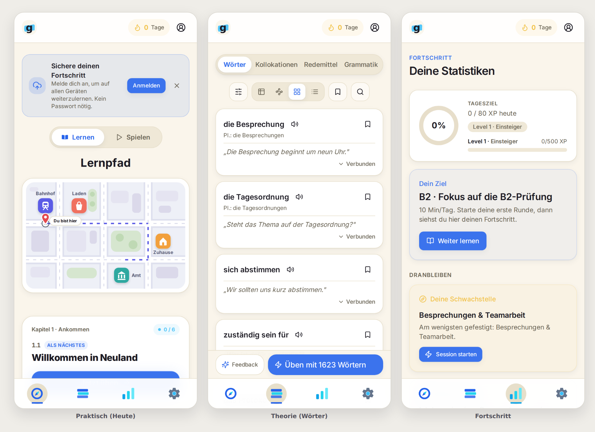

<!-- Genauly · Kit 1 final (hellere Blaus + Koralle + Logo-Fix) -->
<meta charset="utf-8"><meta name="viewport" content="width=device-width, initial-scale=1">
<title>Genauly · Kit 1 · hellere Blaus + Koralle</title>
<link rel="preconnect" href="https://fonts.googleapis.com"><link rel="preconnect" href="https://fonts.gstatic.com" crossorigin>
<link rel="stylesheet" href="https://fonts.googleapis.com/css2?family=Fraunces:opsz,wght@9..144,400;9..144,500;9..144,600&family=Inter:wght@400;500;600;700;800&display=swap">
<style>
  :root{ --page:#F3F0E9; --ink:#1C1A20; --mut:#6C6A72; --line:#E1DCCF; --card:#FBF9F4; --ui:"Inter",system-ui,sans-serif; --disp:"Fraunces",Georgia,serif; }
  @media (prefers-color-scheme:dark){ :root{ --page:#131218; --ink:#ECEAF2; --mut:#9997A6; --line:#2A2836; --card:#1A1922; } }
  :root[data-theme="light"]{ --page:#F3F0E9; --ink:#1C1A20; --mut:#6C6A72; --line:#E1DCCF; --card:#FBF9F4; }
  :root[data-theme="dark"]{ --page:#131218; --ink:#ECEAF2; --mut:#9997A6; --line:#2A2836; --card:#1A1922; }
  *{ box-sizing:border-box; margin:0; padding:0; } html{ scroll-behavior:smooth; }
  body{ background:var(--page); color:var(--ink); font-family:var(--ui); line-height:1.55; }
  .wrap{ max-width:1100px; margin:0 auto; padding:0 26px; }
  .intro{ padding:66px 0 30px; }
  .eyebrow{ font-size:12px; font-weight:700; letter-spacing:.16em; text-transform:uppercase; color:var(--mut); }
  h1{ font-family:var(--disp); font-size:clamp(30px,5vw,44px); font-weight:500; letter-spacing:-.01em; margin:13px 0 15px; text-wrap:balance; line-height:1.1; }
  .intro p{ max-width:66ch; font-size:16px; opacity:.84; } .intro p + p{ margin-top:9px; }
  .card{ background:var(--card); border:1.5px solid var(--line); border-radius:22px; padding:26px; margin-bottom:22px; }
  h2{ font-family:var(--disp); font-size:22px; font-weight:600; margin-bottom:16px; }
  .cols{ display:grid; grid-template-columns:1fr 1fr; gap:24px; align-items:start; }
  @media (max-width:720px){ .cols{ grid-template-columns:1fr; } }
  .logos{ display:flex; gap:26px; flex-wrap:wrap; }
  .logos figure{ text-align:center; } .logos img{ width:104px; height:104px; border-radius:24px; box-shadow:0 6px 18px rgba(20,16,30,.16); display:block; }
  .logos figcaption{ font-size:12.5px; font-weight:600; color:var(--mut); padding-top:8px; }
  .pal{ display:grid; grid-template-columns:1fr 1fr; gap:12px; }
  @media (max-width:520px){ .pal{ grid-template-columns:1fr; } }
  .sw{ display:flex; align-items:center; gap:11px; } .sw .chip{ width:34px; height:34px; border-radius:9px; flex:none; border:1px solid rgba(128,128,128,.28); }
  .sw .nm{ font-size:14px; font-weight:700; display:block; } .sw .hx{ font-size:11.5px; opacity:.62; font-variant-numeric:tabular-nums; }
  .demo{ display:flex; align-items:center; gap:12px; flex-wrap:wrap; margin-top:6px; }
  .btn{ font-family:var(--ui); font-size:14px; font-weight:700; border:none; border-radius:13px; padding:11px 20px; cursor:default; }
  .pill{ font-size:12px; font-weight:700; border-radius:999px; padding:6px 13px; }
  .shot img{ width:100%; height:auto; display:block; border-radius:14px; }
  .outro{ padding:20px 0 84px; } .outro p{ max-width:66ch; opacity:.84; } .outro p + p{ margin-top:9px; }
  code{ font-family:ui-monospace,Menlo,monospace; font-size:.9em; background:rgba(128,128,128,.14); padding:1px 5px; border-radius:5px; }
</style>
<header class="intro"><div class="wrap">
  <p class="eyebrow">Genauly · Kit 1 · finaler Feinschliff</p>
  <h1>Hellere Blaus, Koralle dazu, Logo-Swipe verlängert</h1>
  <p>Drei Anpassungen an der empfohlenen Himmelblau-Variante: beide Blaus rund <b>10–15% heller</b>
  (Nachtblau <code>#2563EB → #3D74ED</code>, Himmelblau <code>#38BDF8 → #52C6F9</code>), <b>Koralle</b>
  <code>#F0603F</code> neu in der Palette (hier auf Streak/Belohnung gelegt, damit sie in der App sichtbar
  ist), und der <b>Logo-Swipe unten verlängert</b>, sodass er die geschlossene Rundung des g voll abdeckt.</p>
</div></header>
<main><div class="wrap">
  <section class="card"><h2>Logo · Swipe-Korrektur</h2>
    <div class="logos">
      <figure><figcaption>Vorher · Swipe endet über der Rundung</figcaption></figure>
      <figure><figcaption>Nachher · Swipe deckt die g-Rundung ab</figcaption></figure>
    </div>
  </section>
  <section class="card"><div class="cols">
    <div><h2>Palette</h2><div class="pal"><div class="sw"><span class="chip" style="background:#3D74ED"></span><div><span class="nm">Nachtblau</span><span class="hx">#3D74ED · Primär · Buttons, Aktionen</span></div></div><div class="sw"><span class="chip" style="background:#52C6F9"></span><div><span class="nm">Himmelblau</span><span class="hx">#52C6F9 · Akzent · Chips, aktive Tabs, Logo-Swipe</span></div></div><div class="sw"><span class="chip" style="background:#F0603F"></span><div><span class="nm">Koralle</span><span class="hx">#F0603F · Warm · Streak & Belohnung (neu)</span></div></div><div class="sw"><span class="chip" style="background:#F3C24B"></span><div><span class="nm">Butter</span><span class="hx">#F3C24B · Sekundär warm · Highlights</span></div></div><div class="sw"><span class="chip" style="background:#2E9E6B"></span><div><span class="nm">Blatt</span><span class="hx">#2E9E6B · Erfolg</span></div></div><div class="sw"><span class="chip" style="background:#FAF6EC"></span><div><span class="nm">Papier</span><span class="hx">#FAF6EC · Grund</span></div></div></div></div>
    <div><h2>Bausteine</h2>
      <p style="font-size:13.5px;opacity:.75;margin-bottom:12px">Koralle gibt dem kühlen Zwei-Blau-System einen warmen Gegenpol.</p>
      <div class="demo">
        <button class="btn" style="background:#3D74ED;color:#fff">Üben starten</button>
        <button class="btn" style="background:#52C6F9;color:#0A2A3A">Weiter</button>
        <span class="pill" style="background:#F0603F;color:#fff">🔥 Serie 7</span>
        <span class="pill" style="background:#52C6F9;color:#0A2A3A">Als Nächstes</span>
        <span class="pill" style="background:#FBE7E0;color:#F0603F">Belohnung</span>
      </div>
    </div>
  </div></section>
  <section class="card"><h2>In der echten App</h2>
    <p style="font-size:13.5px;opacity:.75;margin-bottom:14px">Nur Farb-Tokens + Logo getauscht, Layout unverändert. Nachtblau trägt Buttons, Himmelblau die Chips/aktiven Tabs, Koralle die Streak-Belohnung.</p>
    <div class="shot"></div>
  </section>
</div></main>
<footer class="outro"><div class="wrap">
  <p>Passt das so? Wenn ja, verdrahte ich diese Palette echt (hell + dunkel), erzeuge Logo/Favicons/PWA-Icons aus dem korrigierten Zeichen und liefere per PR nach <code>main</code>. Wenn Koralle woanders sitzen soll (z. B. auf „Sprechen" statt Streak) oder die Blaus noch einen Tick heller/dunkler, sag einfach.</p>
</div></footer>